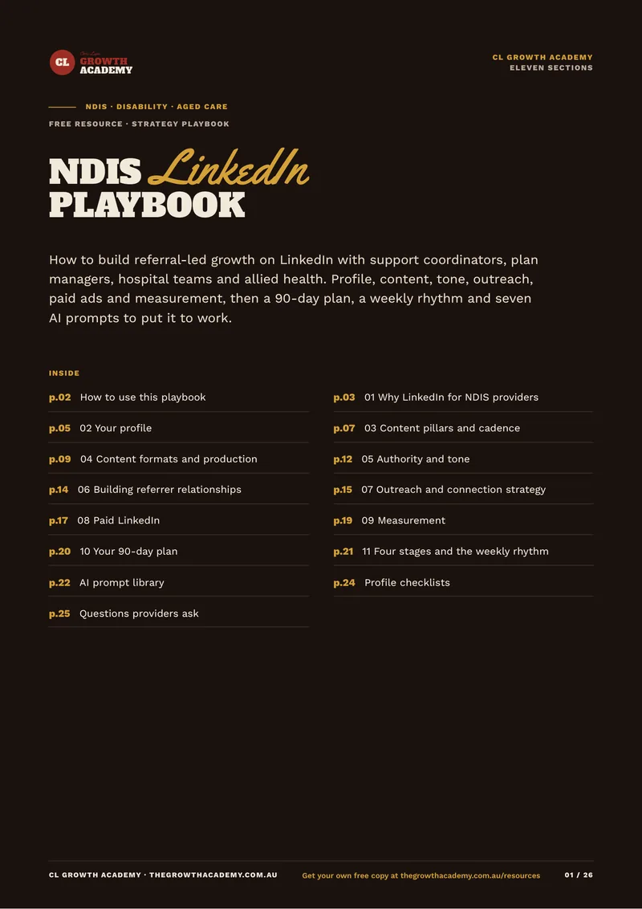

NDIS LinkedIn Playbook: Profile, Content, Outreach and a 90-Day Plan
The NDIS LinkedIn Playbook is a 26-page guide to winning referrals on LinkedIn from support coordinators, plan managers, hospital teams and allied health. It covers your profile, four content pillars, tone, outreach, paid ads and measurement, then a 90-day plan, a weekly rhythm and seven AI prompts.
The NDIA counted 792,304 participants with approved NDIS plans at 30 September 2026 (NDIS Quarterly Report, Q1 2026-27 (opens in a new tab)). The playbook is about the professionals who help them find providers.

What does the NDIS LinkedIn Playbook cover?
Eleven sections, then an AI prompt library, profile checklists and answers to the questions providers ask when they start.
| Section | What it covers |
|---|---|
| 01 Why LinkedIn | Who refers, how LinkedIn and Meta do different jobs, what one referrer is worth |
| 02 Your profile | The personal profile and company page, headline formula, About, Featured, skills |
| 03 Content pillars | Four pillars, the 70:30 rule, posting cadence, monthly batching, quarterly audit |
| 04 Formats | Text posts, carousels, video, photos, and reworking Meta posts for LinkedIn |
| 05 Authority and tone | The Clinical Veteran voice, specific detail, the cliché kill list |
| 06 Relationships | The commenting routine, an engagement version of the 3-2-1 rule, the 12-hour rule |
| 07 Outreach | Referrer tiers, search filters, Sales Navigator, five outreach stages |
| 08 Paid LinkedIn | When to pay, targeting, ad formats, the SCORE copy framework |
| 09 Measurement | Vanity, engagement and business metrics, and a monthly review |
| 10 90-day plan | Two-week blocks from profile set-up to first referral conversations |
| 11 Rhythm | Four growth stages and a weekly routine |
Why use LinkedIn for NDIS referrals?
Support coordinators, plan managers, discharge planners and allied health spend their working day on LinkedIn, and they form views about providers long before they refer. Meta reaches the people you support and their families. LinkedIn reaches the professionals who refer them.
| Meta (Facebook and Instagram) | |
|---|---|
| Reaches participants, families and carers | Reaches support coordinators, plan managers and allied health |
| Emotional, story-led content performs | Authority, precision and clinical insight perform |
| Lower cost per click | Higher cost per click, worth it for what one referral relationship brings in |
| Trust built through social proof | Trust built through professional credibility |
The playbook also walks you through working out what one referrer is worth to you, from your own hours, rates and length of stay, so you can judge the time and money LinkedIn takes.
What should my LinkedIn profile say?
Your profile is the check a referrer runs after seeing a post they liked. The personal profile of the founder or a senior leader builds the relationships. The company page backs them up.
The headline formula from the playbook: role + who you serve + outcome + NDIS keyword. For example: "Clinical Director | Helping support coordinators place participants with complex needs with confidence | Complex care, SIL, ABI | [your region]".
The About section opens with the referrer's world, names the people you support and where, gives one proof point you can evidence, and ends with one clear action. Full checklists for the personal profile and the company page are on page 24.
How much time does LinkedIn take each day?
Short answer: 10 to 15 minutes every weekday, commenting on three to five referrer posts before you do anything else on LinkedIn. Add 15 minutes on Monday for follow-ups, 20 minutes on Wednesday for five connection requests, 15 minutes on Friday to review the week, and one 60 to 90 minute batch at the end of each month.
| When | What |
|---|---|
| Every weekday, 10 to 15 minutes | Comment on three to five referrer posts |
| Monday, 15 minutes | Review the tracker, check weekend messages, send one or two warm follow-ups |
| Posting days, for example Tuesday and Thursday | Publish the scheduled posts and reply to every comment within 12 hours |
| Wednesday, 20 minutes | Send five personal connection requests to referrers you have already engaged with |
| Friday, 15 minutes | Check which posts performed and record the week's observations as voice notes |
| Last week of the month, 60 to 90 minutes | Draft and schedule next month's posts, checked against the cliché kill list |
The playbook calls it a fixed appointment, never an optional task.
What should I post?
Four content pillars, two posts a week as the minimum and three as the target, with 10 to 15 minutes of commenting on referrer posts each weekday.
| Pillar | What it covers |
|---|---|
| Clinical authority | What good support looks like, governance, how you respond when something goes wrong |
| Operational reliability | Roster accuracy, intake turnaround, response times, what happens at 4pm on a Friday |
| Human experience | De-identified outcomes shared with consent, milestones, staff tenure and culture |
| Sector observations | Policy changes and what they mean in practice, problems the sector avoids |
Keep about 70% of posts on clinical value and education and 30% on connection and culture. Put vacancies inside an outcome-led post as one line, never a post on their own. The cadence and timing rules on this page get a post seen, and a real voice gets it read. As I tell provider teams: "LinkedIn is becoming a little less polished these days and so some of that stuff will actually cut through more."
How do I approach referrers on LinkedIn?
Make your name familiar before you ask for anything. The playbook uses an engagement version of the 3-2-1 rule, a common LinkedIn guideline, spread over five to seven days before you connect with a high-value referrer:
- 3 meaningful comments on their posts, or posts they have engaged with.
- 2 likes on content they have written or shared.
- 1 connection request with a personal note about a shared professional context.
Then each person moves through five stages in order:
- Connect.
- Engage.
- Share.
- Converse.
- Only then, introduce what you do.
Track three things for every referrer:
- Last contact date.
- Relationship stage.
- Next action.
And reply fast: the playbook's 12-hour rule is to acknowledge every enquiry, comment or message from a referrer within 12 hours, because referrers read response speed as a sign of how your organisation runs.
For the step-by-step version your assistant can run each week, with message examples for every stage and a printable tracker, use the LinkedIn Referral Partner Outreach SOP.
Is paid LinkedIn worth it for NDIS providers?
Once the organic foundation is in place. The playbook's checklist before you spend: a complete profile and company page, at least a month of posting twice a week or more, your referral value figure written down, and a way to record which referral conversations came from an ad. Judge the cost against what one referral relationship is worth, and track cost per referral conversation, never cost per click alone.
How do I know if LinkedIn is working?
Three tiers of measures, each with its own job.
| Tier | What to track | How to use it |
|---|---|---|
| Vanity | Followers, impressions, likes | Report only |
| Engagement | Engagement rate, comments, profile views from target roles, acceptance rate | Review weekly |
| Business | New connections from target roles, inbound messages from referrers, referral conversations from LinkedIn | Review monthly, the one that justifies the time |
Set your own baseline in month one and judge every later month against it.
What does the 90-day plan look like?
Six two-week blocks, from profile set-up to your first referral conversations.
| Weeks | Focus |
|---|---|
| 1 to 2 | Rewrite the profile and company page, list your top 20 target referrers, define your pillars |
| 3 to 4 | First content batch: eight posts, two per pillar, scheduled at two a week, daily commenting starts |
| 5 to 6 | Run the 3-2-1 on your top ten referrers, send the first five connection requests, set up the tracker |
| 7 to 8 | Review month one, send the next five requests, post your first carousel |
| 9 to 10 | Start conversations with your three to five warmest connections, record your first short video |
| 11 to 12 | Compare against your baseline, introduce what you do to warm connections, decide on paid |
Who is the playbook for?
Owners, clinical leaders and marketing staff at NDIS, disability and aged care providers who want referrals from support coordinators, hospital teams and allied health. Read sections 01 to 09 with the person who will post and the person who will run outreach, then start the 90-day plan the same week. If you would rather have help with your profile and posting, see my LinkedIn for NDIS providers service.
Get the NDIS LinkedIn Playbook free
You get the 26-page playbook with the AI prompt library and profile checklists, plus every other resource in the library.
FAQ
How often should an NDIS provider post on LinkedIn?
Two posts a week is the minimum and three is the target:
- A clinical authority post.
- A human experience or culture post.
- A sector observation.
A monthly batching session of 60 to 90 minutes keeps that going.
Should I post on my personal profile or the company page?
Both, with the personal profile first. Personal posts reach far more of the right people. Post the personal version, then share it on the company page a few hours to a day later.
Who should do the posting?
The founder, clinical director or senior leader whose name referrers will remember. Someone else can capture ideas, draft from voice notes and run the outreach tracker, but the posts and replies come from that person, in their own voice.
Can I share participant stories on LinkedIn?
Only with written consent from the person or their nominee, even without their name. Consent for a Facebook post does not cover LinkedIn, so ask for both at once.
What is the 3-2-1 rule on LinkedIn?
A common LinkedIn guideline with more than one version. One splits your weekly posts into three on your industry, two with your own insight and one personal story. Another sets a daily mix of comments, shares and posts. The playbook uses an engagement version before you connect with a referrer: 3 meaningful comments, 2 likes, then 1 connection request with a personal note, over five to seven days.
What is the 4-1-1 rule on LinkedIn?
A common content guideline from social media marketing: for every one post about your own business, share one repost and four useful pieces of content from other people. It keeps self-promotion to a small share of what you post. The playbook sets its own balance for NDIS providers: about 70% clinical value and education, 30% connection and culture.
How fast should I reply to referrers on LinkedIn?
Use the 12-hour rule: acknowledge every enquiry, comment or message from a referrer within 12 hours, and reply to every comment on your own posts within the same window. Response speed is the first evidence a referrer has of how reliable you are.
How long before LinkedIn brings referrals?
Plan in months. The 90-day plan gets you to your first referral conversations, and the playbook's growth stages run from month one to month six and beyond.
Sources
Public sources this page relies on, each checked 15 November 2026:
- NDIA, NDIS Quarterly Report to disability ministers, Q1 2026-27 (participants with approved plans at 30 September 2026): https://www.ndis.gov.au/about-us/publications/quarterly-reports (opens in a new tab)
Want help turning LinkedIn into referrals?
Book a free growth audit and I'll go through your business with you, then pick the first three moves.